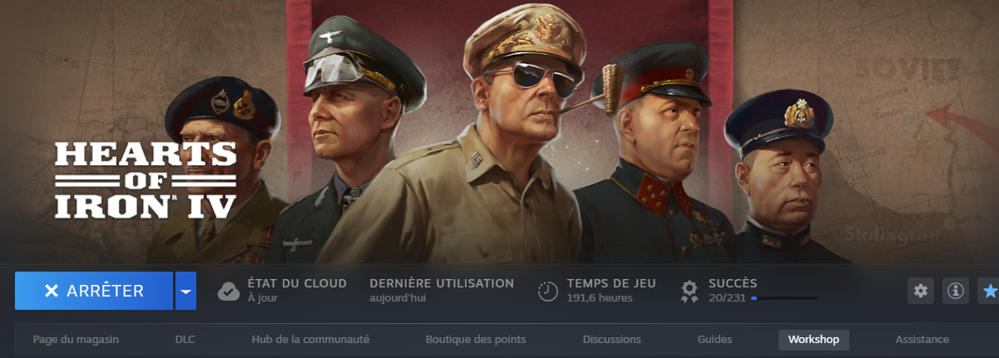
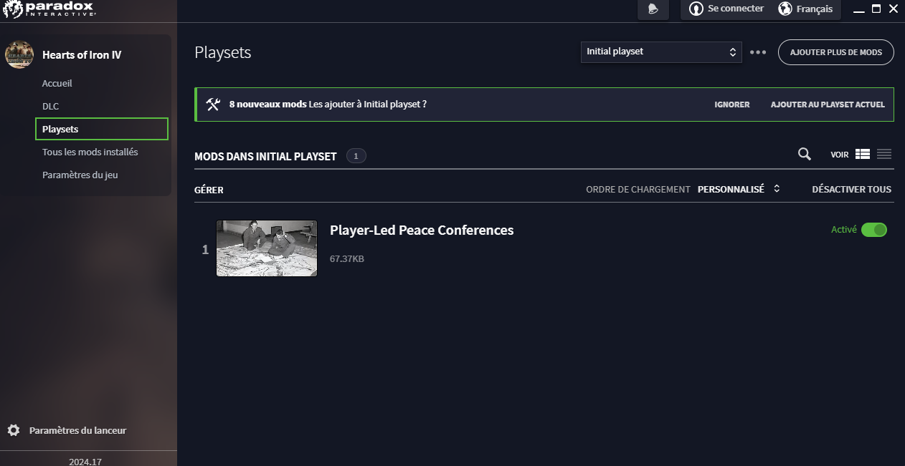

Apprendre les playsets
On peut télécharger des mods sur le workshop de Steam qui peuvent modifier complètement le jeu ou bien ajouter quelques éléments utiles et drôles.
Une fois un ou plusieurs mods téléchargés, on peut les voir dans le menu "Playsets", où l'on peut ajouter des mods avec le bouton en haut à droite, ou changer/créer un nouveau playset en cliquant sur "Initial Playset".
Certains mods ne sont utilisables que sur certaines versions du jeu ou si l'on possède un DLC.
